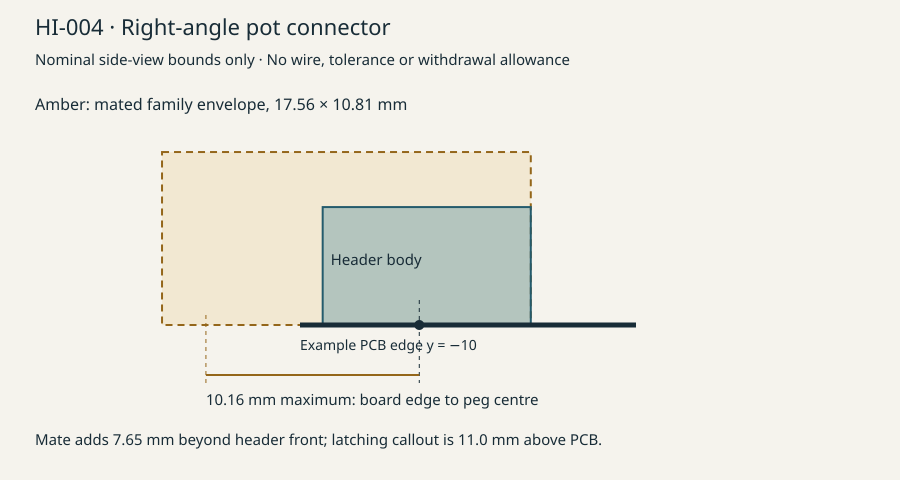

HI-004 · 26 November 2026 · Candidate geometry
Pot connector mating and service space
The proposed Micro-Fit header needs space for its mate and removal. The installed library footprint describes the header; its courtyard does not reserve the assembled harness. No connector is placed or adopted by this check.

Drawing evidence
The manufacturer-authored header drawing, revision G, was retrieved from LCSC and inspected visually. Current Molex revision H1 text agrees on the common nominal dimensions and edge rule; its full visual revision comparison remains open. The two archived PDF pages duplicate the same revision G sheet.
The housing drawing, revision A, provides a right-angle mated-family length of 17.56 mm, height of 10.81 mm and latching-height callout of 11.0 mm. Four-circuit housings have no top pull tab. These values exclude wire bends, withdrawal and finger access; the latching callout is not a finger-access allowance. Source identities and hashes are in the editable geometry record.
Edge datum and calculation
Use the installed footprint's component-side coordinates: pad 1 is the origin; the mate exits toward negative y. The 10.16 mm limit runs from the mating-side PCB edge to the locator peg centre. It is not measured from the header face or signal-pin row.
With locator coordinate \(y_p=-4.32\,\mathrm{mm}\), edge coordinate \(y_e\), and edge-to-peg distance \(d\):
\[d=y_p-y_e\leq10.16\,\mathrm{mm}\quad\Rightarrow\quad y_e\geq-14.48\,\mathrm{mm}.\]
This necessary placement condition does not permit cutting through the locator hole; board-edge tolerances, hole retention, insulation and service space must also pass.
Space missing from a header-only check
The nominal header front is \(-4.32-4.60=-8.92\,\mathrm{mm}\); its rear body is \(-8.92+9.91=0.99\,\mathrm{mm}\). Using the mated-family length:
\[y_{\mathrm{exit}}=0.99-17.56=-16.57\,\mathrm{mm},\qquad \Delta L=-8.92-(-16.57)=7.65\,\mathrm{mm}.\]
The side steps give nominal header width \(9.65+2(0.25)=10.15\,\mathrm{mm}\). These bounds agree with the installed library's fabrication lines; they are not a complete tolerance envelope.
Checks and next action
Six library/datum comparisons and four edge controls pass. The controls reject an edge beyond the limit, an edge past the peg and a face-based datum error. Four native board hashes remain unchanged; no actual connector placements were checked.
Before placement freeze, compare the current header drawing visually, bound pin and body tolerances, select actual cable and strain relief, and reserve latch access plus withdrawal. Then apply these envelopes to each board connector and verify rear removal and chassis extraction. Keep the existing pot nets and functional ownership. Full drill access remains pending the user's body and bit measurements.
Vocabulary key
- Datum
- The specified reference used to locate a dimension.
- Courtyard
- A PCB footprint boundary used for component placement clearance.
- Mate
- The connector half that plugs into the header.
- Locator peg
- A plastic feature that locates and retains the header in the PCB.
- Envelope
- The space occupied by parts, including the stated allowances.
- Nominal
- The stated design value before tolerances.
- Withdrawal
- The movement needed to unplug a connector.